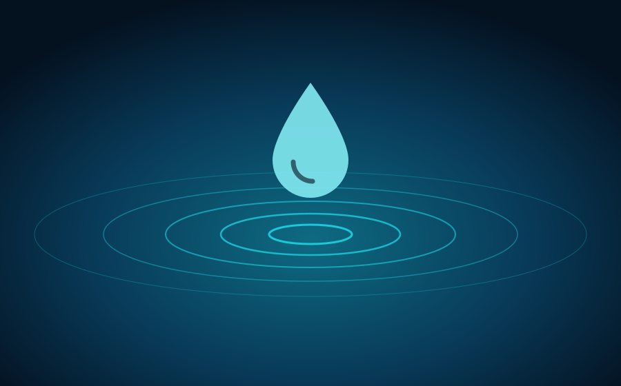

Pequenas mudanças na rotina doméstica evitam o desperdício e garantem que esse recurso essencial continue disponível para as próximas gerações.
Veja os númerosO consumo médio diário do brasileiro supera a recomendação da ONU, concentrando-se principalmente no banheiro e na cozinha.
154
litros por dia
Louça · Roupa · Banho · Descarga · Limpeza
Reduzir o consumo diário para 110 litros/pessoa.
Limitar o banho a 5 minutos (economia de até 90 litros por dia).
Reaproveitar 70% da água da máquina de lavar na limpeza de quintais e calçadas.
Reduza o banho para 5 minutos e desligue o chuveiro ao se ensaboar para economizar até 90 litros por vez.
Mantenha a torneira fechada ao escovar os dentes, fazer a barba ou ensaboar a louça.
Verifique torneiras pingando e descargas desreguladas; um pequeno furo pode desperdiçar milhares de litros por mês.
Instale calhas e reservatórios para captar água da chuva e use na limpeza de quintais e calçadas.
Acumule roupas e louças para ligar a máquina apenas na capacidade máxima, evitando lavagens desnecessárias.
Regue as plantas de manhã cedo ou à noite para evitar a evaporação rápida e dê preferência ao regador.
[Preencha com dados da pesquisa e cite a fonte no rodapé.]
Américas
Ásia
Europa
África
| Atividade | Torneira aberta | Uso consciente |
|---|---|---|
| Banho | 135 litros | 45 litros |
| Escovar os dentes | 12 litros | 0,5 litros |
| Lavar a louça | 117 litros | 20 litros |
| Lavar o carro | 216 litros | 40 litros |